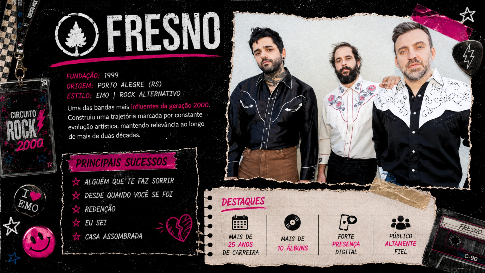
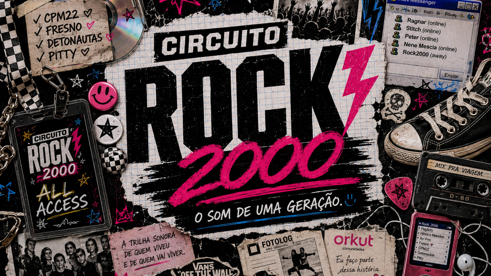
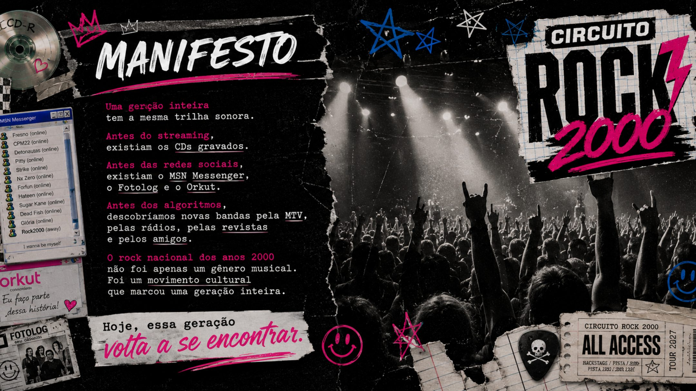
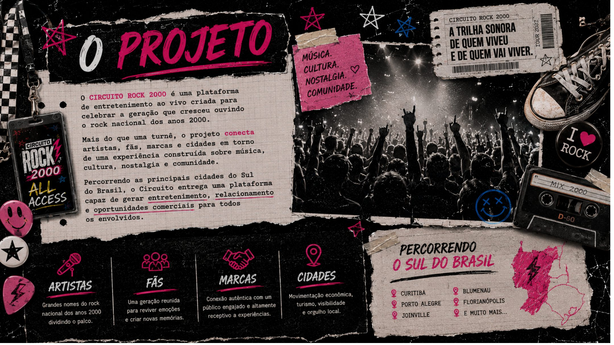
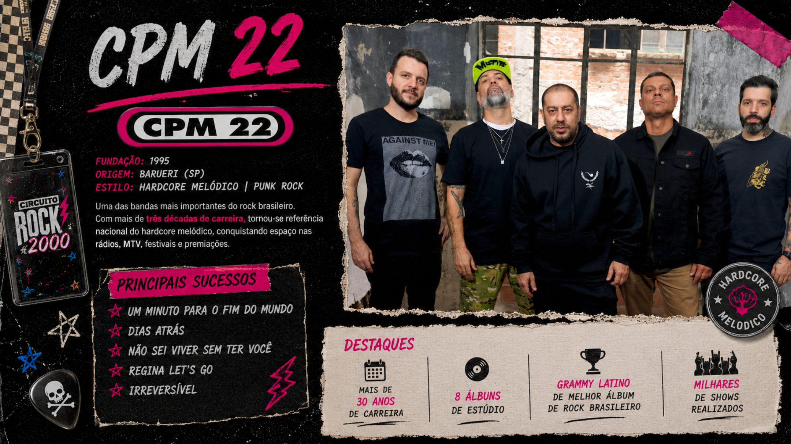
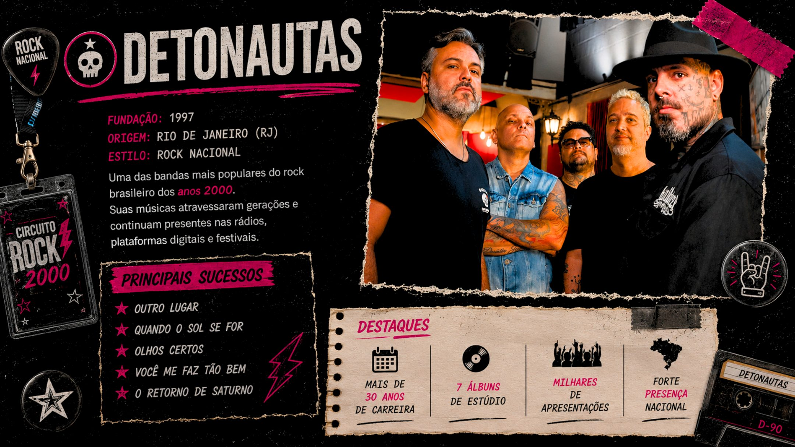
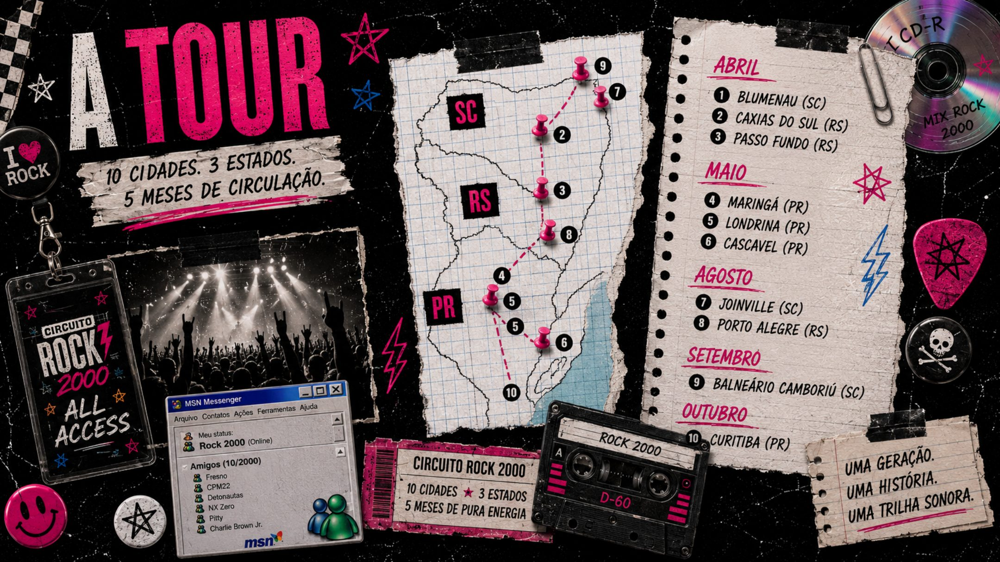
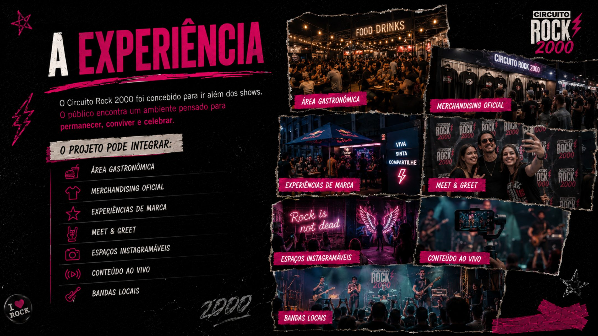
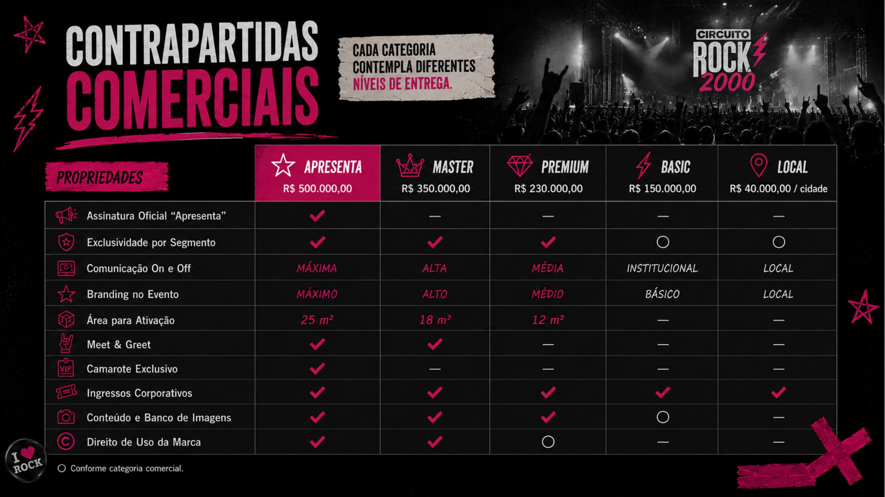

Fresno
Emo / rock alternativo.

O som de uma geracao
Uma plataforma criada para reconectar artistas, publico, cidades e marcas em torno de uma paixao comum: a musica.
Conheca a oportunidadeManifesto
Toda geracao inteira tem a mesma trilha sonora. Antes do streaming, existiam CDs gravados, MSN, Fotolog, Orkut, MTV, radios, revistas e shows que marcaram a memoria afetiva de uma epoca.

A geracao

O projeto
O Circuito Rock 2000 nasce como uma plataforma de entretenimento ao vivo criada para celebrar a geracao que cresceu ouvindo o rock nacional dos anos 2000.
O projeto conecta artistas, fas, marcas e cidades em uma experiencia construida sobre musica, cultura, nostalgia e comunidade.
Line-up

Emo / rock alternativo.

Hardcore melodico / punk rock.

Rock nacional.
A tour


A experiencia
Area gastronomica, merchandising oficial, experiencias de marca, meet & greet, espacos instagramaveis, conteudo ao vivo e bandas locais.
Patrocinio
Mais do que exposicao, o Circuito Rock 2000 cria oportunidades para que patrocinadores participem da jornada do publico antes, durante e depois da tour.
Falar com a SevenX
Oportunidade
Uma oportunidade de fazer parte da trilha sonora de uma geracao.